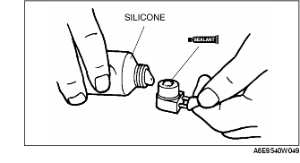

Magnetic clutch disassembly/assembly
1. Disassemble in the order indicated in the table.

|
1
|
Bolt
|
|
2
|
Pressure plate
|
|
3
|
Shim
|
|
4
|
Snap ring
(See Snap Ring Installation Note.)
|
|
5
|
A/C compressor pulley
|
|
6
|
Screw
(See Screw Installation Note.)
|
|
7
|
Clamp
(See Clamp Installation Note.)
|
|
8
|
Snap ring
(See Snap Ring Installation Note.)
|
|
9
|
Stator and thermal protector
|
|
10
|
A/C compressor body
|
2. Assemble in the reverse order of disassembly.
3. Adjust the magnetic clutch clearance. (See MAGNETIC CLUTCH ADJUSTMENT.)
Bolt Removal/Installation Note
1. When removing or installing the bolt, hold the pressure plate in place as shown in the figure.

2. When installing a new A/C compressor body, replace the recommended bolt.
Stator and Thermal Protector Removal Note
1. After removing the stator and thermal protector, completely remove the silicone adhering to the A/C compressor side.
Stator and Thermal Protector Installation Note
1. Apply approx. 1 g {0.04 oz} of silicone (Shin-Etsu Silicone KE-347W or similar) to the contact surface of the thermal protector, then thoroughly install it onto the A/C compressor, leaving no gaps.

Screw Installation Note
1. When installing a new stator and thermal protector, replace the screw.
Clamp Installation Note
1. When installing a new stator and thermal protector, replace the clamp.
Snap Ring Installation Note
1. When installing a new pressure plate, A/C compressor pulley, stator, or A/C compressor body, replace the snap ring.